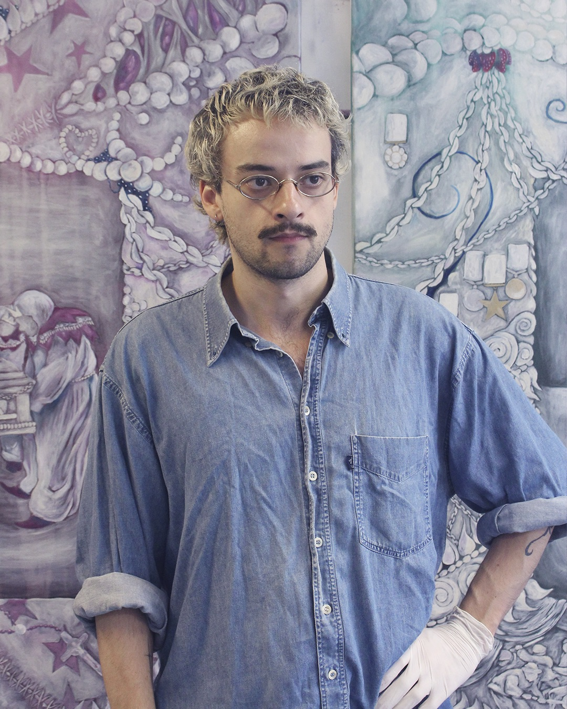

Gustavo Poester (Cachoeira do Sul, 1995) é artista visual, bacharel em Artes Visuais pela UFRGS. Com atuação principalmente em pintura, atualmente integra o Projeto PAC, da Galeria Gacchi Prietto, em Buenos Aires. Já participou de exposições individuais e coletivas em Porto Alegre e Buenos Aires.
A torta é um ponto de partida recorrente em seu trabalho: funciona como palco, textura, templo e superfície. Nesse espaço, articulam-se celebração, violência, espiritualidade, desgaste, gula e prazer, reunindo figuras festivas e símbolos religiosos em composições saturadas, de aparência cremosa.
Sua pintura se constrói por camadas de veladuras, texturas, brilhos e transparências. A matéria acumula, escorre e absorve as figuras à própria superfície da imagem.